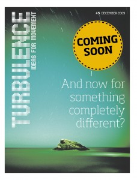

Turbulence 5 Goes Online on Weds 2 December
Issue 5 goes online next Wednesday. Check back here then!
{kind=link}
Turbulence 5 Launch Panel @ Historical Materialism Conference, London 29 Nov
Issue 5 of Turbulence will be officially launched at the Historical Materialism Conference in London (November 27-29, 2009). The event will take place at the School of Oriental and Asian Studies (SOAS), Thornhaugh Street, London, WC1H OXG. The Turbulence editors will present the issue and the core problematics it attempts to address. John Holloway and Angela McRobbie will be the official ‘discussants’ on the panel, and we hope to get a conversation going with everyone who comes along. The panel will be chaired by Matteo Mandarini.
{kind=link}
The conference is organised by the Historical Materialism journal and is an increasingly important location for discussion among the critical-Marxist left and beyond. This year’s conference is titled ‘Another World Is Necessary: Crisis, Struggle and Political Alternatives’. The event is free and open to the public, but prior registration is required (see website below). A suggested donation for this self-funded event, for those registering in advance, is £40 waged and £15 unwaged.
Historical Materialism Conference website.
Conference programme here.
Map to find SOAS.
OUR PANEL: Sunday 29 November 2009, 2.45-4.30pm, room G52.
Distro and Storage Help Needed in N. America
Can you help us distribute Turbulence 5 in North America? We’re looking for people who can help out by either distributing small bundles of 10-50 copies among friend, colleagues, etc… as well as people who can help us get rid of much larger numbers. We’re also looking for people who can help store up to 1-2,000 copies in a couple of large cities. If you can help, get in touch with us as soon as possible at editors@turbulence.org.uk
Turbulence 5 Now Available @ Arnolfini Gallery in Bristol
The Laboratory of Insurrectionary Imagination have a week long installation (17-22 Nov.), Operation Bike Block, followed by a week of workshops (22-29 Nov.), at the Arnolfini gallery (16 Narrow Quay, Bristol, BS1 4QA, UK). For more information on the Lab’s events at the gallery, click here and here (See also the Bike Block video and the Lab’s website.)
The event is part of the C Words two month investigation organised by Platform at the Arnolfini Gallery in Bristol in the run up to the Copenhagen Climate Summit. For more information click here.
Advance copies of Turbulence 5 are now available at the exhibition.
Many thanks to the Lab!
Turbulence ISSN
We’ve been assigned an ISSN (International Standard Serial Number), used for periodical library cataloging. If you want to order Turbulence for your local or university library, it might be useful. Our Number, which will remain the same for future issues, is as follows:
Turbulence ISSN 1754-2367
-
Who we are

Turbulence is a journal/newspaper that we hope will become an ongoing space in which to think through, debate and articulate the political, social, economic and cultural theories of our movements, as well as the networks of diverse practices and alternatives that surround them. Read more here
-
Turbulence on Myspace